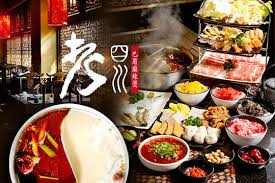

不斷地投入熱誠培養相同理念的餐飲服務人員，追求美食無國界的企業目標。
老四川秉持著以服務為本，以美食為主以感動為信念的不變精神，開創一家令客人與員工喜悅的餐飲企業。
以專業的精神與態度，經營連鎖餐飲，來服務消費者盡量滿足顧客的需求，並對從業的同仁善盡照顧之責。
走進老四川，空氣中瀰漫的香料氣息，說明這裡湯頭之美味！
大廚親赴哈爾濱研習，帶回的巴蜀麻辣燙講求的三香三椒三料及七滋八味九雜，令人一試難忘。
老四川的麻辣湯頭味多、味廣、味濃，入口後不僅不會讓人頭皮發麻，反而會有順暢淋漓、回味無窮的快感。
老四川巴蜀麻辣燙
從大陸哈爾濱市的一家麻辣鍋，變身為台灣地區強調川味為主的麻辣鍋連鎖餐飲公司，